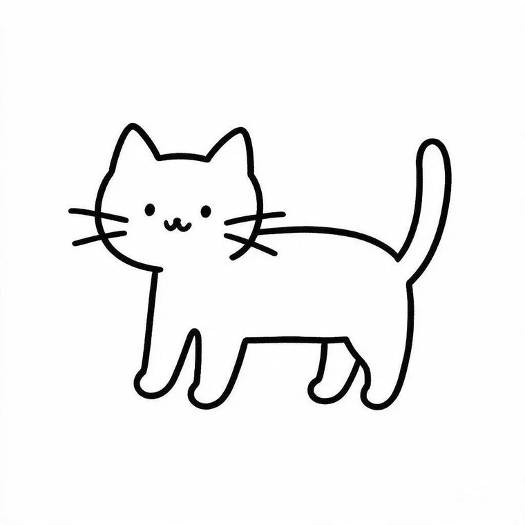
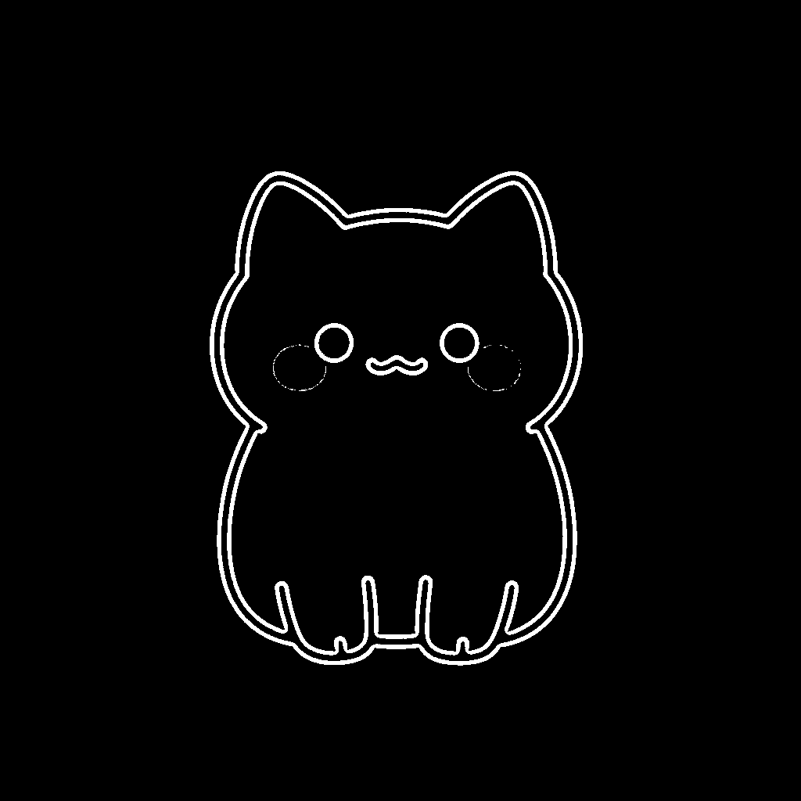
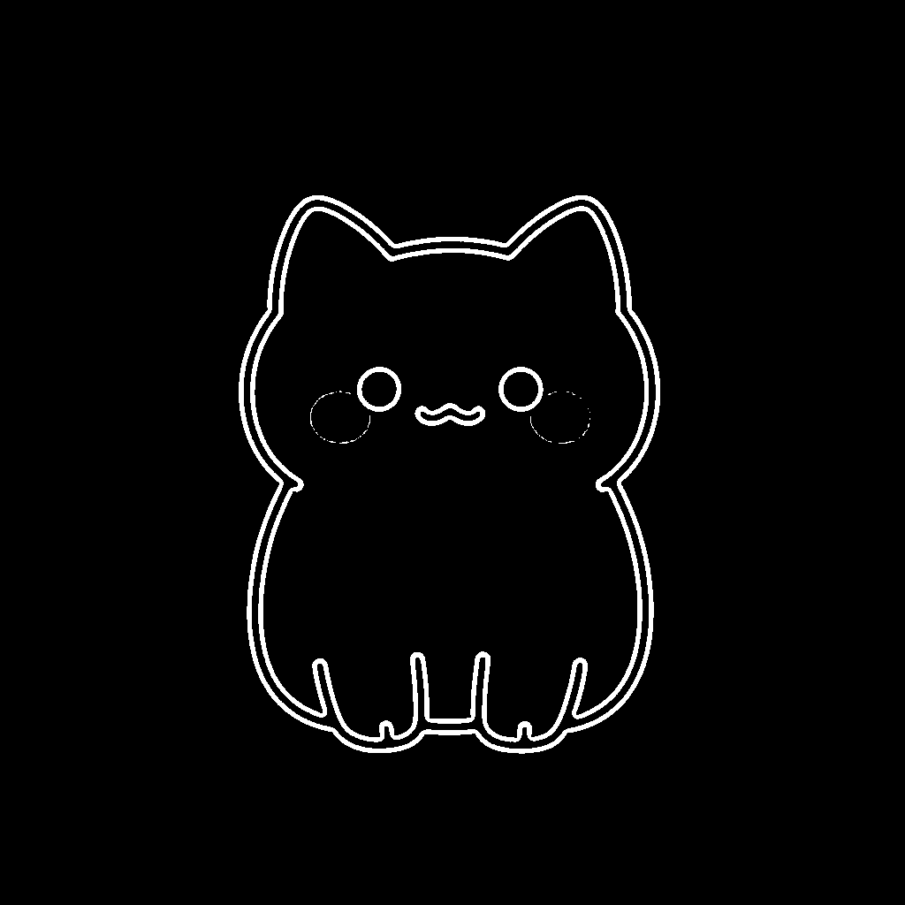
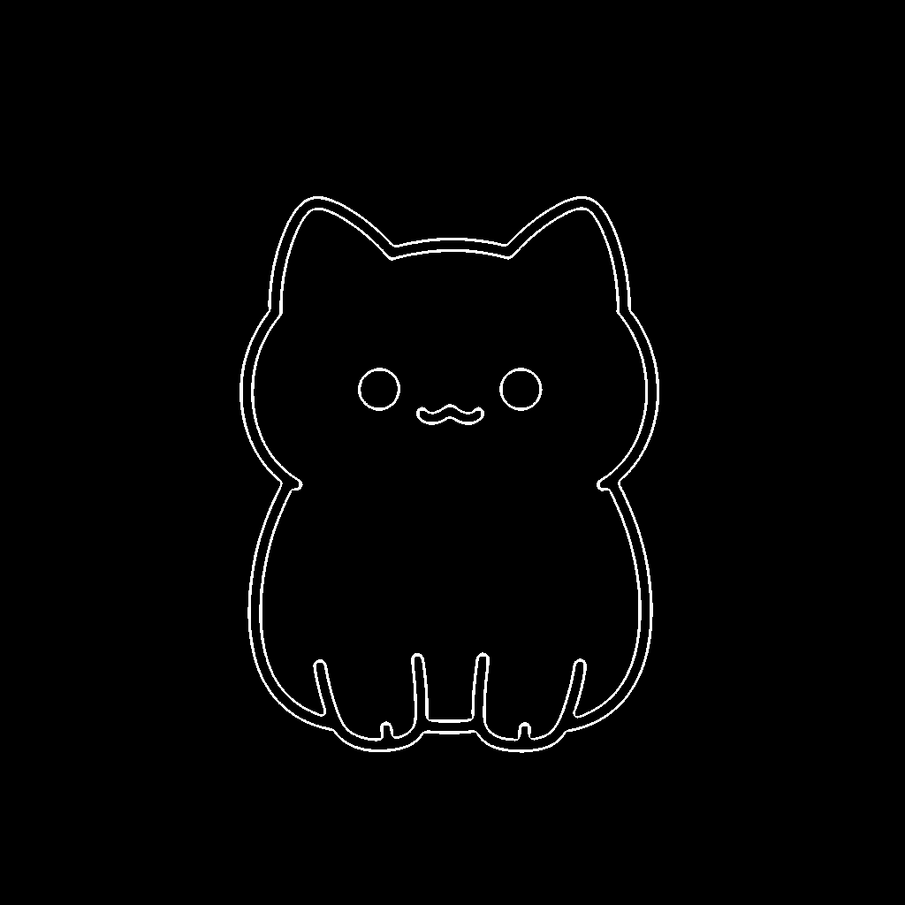

输入一句话描述，AI 自动生成简笔画，经轮廓提取转换为笔画坐标， 再通过系统辅助能力在屏幕指定区域自动绘制完成。
以下绘制动画使用项目中 test_cat_coords.json 的真实笔画坐标数据在 Canvas 上还原

输入文字描述，如「猴子捞月」；选择绘制复杂度与时长
MainActivity → 权限引导 + AI 配置
调用 SiliconFlow / Seedream 接口生成 1024×1024 简笔画
AiSketchGenerator.callSeedream()
灰度 → 二值化 → 形态学闭运算 → 骨架提取 → 轮廓追踪
ImageContourExtractor（558 行）
轮廓点序列简化为可执行的绘制笔画，归一化为 0~1 坐标
ShapeToStrokeConverter + SvgPathParser
通过无障碍能力下发绘制手势，在用户框选区域内逐笔绘出
DrawingAccessibilityService（331 行）
绘制坐标来自项目真实产出物 test_cat_coords.json（5 笔 / 2,668 个原始采样点）
主链路失败时自动降级，保障功能可用性 —— 这是项目最关键的架构设计
用户描述
Seedream API
OpenCV
坐标归一化
手势下发
大模型直接输出 SVG path，本地解析为绘制坐标
SvgPathParser（372 行）
解析模型输出的 JSON 绘图指令序列
ShapeToStrokeConverter（152 行）
预置常用图案模板，离线可用
TemplateLibrary（670 行）
输入为 AI 生成的简笔画，经以下四步处理转换为可执行的绘制笔画。 以下均为项目开发中从真机导出的真实中间结果。



对比 01 与 03 可看到：二值化阶段残留的细小噪点（脸颊处的虚线圈）， 经形态学闭运算与骨架化处理后基本消除 —— 这是提升笔画提取质量的关键步骤。
以下全部来自项目构建与运行日志原文，完整还原从报错到修复的过程
首次构建直接失败，Gradle 提示目录不是合法的构建根目录。
FAILURE: Build failed with an exception. * What went wrong: Directory 'C:\...\20260729084954' does not contain a Gradle build. A Gradle build should contain a 'settings.gradle' or 'settings.gradle.kts' file in its root directory.
projects/simple_draw_bot，
构建命令的工作目录层级错了。改为在含 settings.gradle.kts
的目录下执行构建。
跨进程传递数组时被擦除为 Array<Any?>，解构与类型推断全部失败。
> Task :app:compileDebugKotlin FAILED e: DrawingAccessibilityService.kt:154:65 Destructuring declaration initializer of type Array<Any?> must have a 'component1()' function e: DrawingAccessibilityService.kt:158:27 Type mismatch: inferred type is Any? but Int was expected e: DrawingAccessibilityService.kt:158:32 Type mismatch: inferred type is Any but List<List<PointF>> was expected e: FloatingBallView.kt:485:53 Unresolved reference: tvCountdownOverlay
tvCountdownOverlay 控件 id。
真机（OPPO）安装后一启动就闪退。
E AndroidRuntime: FATAL EXCEPTION: main E AndroidRuntime: Process: com.simpledrawbot, PID: 10936 E AndroidRuntime: java.lang.RuntimeException: Unable to start activity ComponentInfo{...} E AndroidRuntime: Caused by: android.view.InflateException: Binary XML file line #19
链路能跑通，但生成结果不合格 —— 这正是「主链路 + 兜底」设计的由来。
D AiSketchGenerator: Seedream 返回结果: https://s3... D AiSketchGenerator: 下载图片成功: 1024x1024 D ContourExtractor: 外轮廓 1 条 D ContourExtractor: 内轮廓 1 条 D AiSketchGenerator: 轮廓转笔画: 1 条笔画 D AiSketchGenerator: Seedream 图片生成+轮廓提取失败: 未知, 1 条
> Task :app:compileDebugKotlin
> Task :app:packageDebug UP-TO-DATE
> Task :app:assembleDebug UP-TO-DATE
BUILD SUCCESSFUL in 10s
46 actionable tasks: 1 executed, 45 up-to-date
SimpleDrawBot-v1.1.apk，完成可安装版本。
同一个「小猫」主题，通过 6 轮 Prompt 策略调整，逐步逼近可提取的理想线稿
最初尝试：用英文 Prompt 描述为 children's coloring book 风格。 问题：生成结果带有灰阶填充与噪点，二值化后轮廓断裂， 提取出的笔画过于破碎。
共 6,442 行代码 · 279 KB 源码 · 按职责分层组织
{
"name": "cat",
"strokes": [
{ "points": [ { "x": 0.643, "y": 0.229 }, { "x": 0.352, "y": 0.229 }, ... ] },
...
]
}归一化为 0~1 坐标，适配任意屏幕尺寸。 本页演示动画即使用该文件（5 笔 / 2,668 个采样点）在 Canvas 上还原。
SYSTEM_ALERT_WINDOW悬浮窗覆盖显示FOREGROUND_SERVICE悬浮球常驻前台BIND_ACCESSIBILITY_SERVICE绘制手势下发INTERNETAI 接口调用无障碍能力仅用于「把用户想画的图案自动画到画布上」这一创作辅助场景。
直接打包完整 OpenCV so 库导致 APK 达 153 MB。 后续应按需裁剪指令集（仅保留 arm64-v8a）或改用轻量轮廓算法。
AI 生成图的风格波动会直接影响二值化效果。 更稳的做法是让模型直接输出矢量（SVG）而非位图， 可跳过 CV 环节 —— 这也是把 SVG 解析设为兜底的原因。
悬浮窗 + 无障碍双重授权对普通用户门槛较高， 应补充分步引导与「为什么需要」的说明，降低流失。